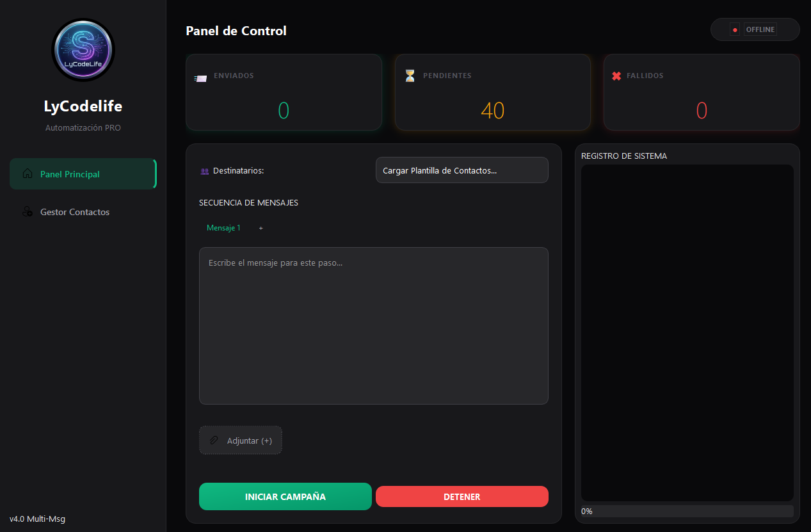
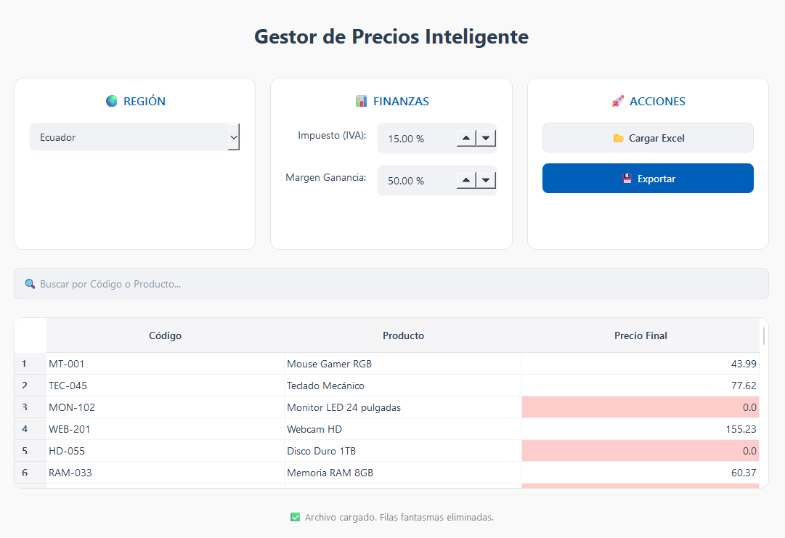

Recupera tu tiempo con
programas adaptados a tu ritmo.
Desarrollo scripts y automatizaciones de software a medida que eliminan el trabajo manual de tus operaciones. Tú escalas el negocio, mi código hace el trabajo sucio.
Un proceso técnico, sin fricción.
Diseñado para líderes ocupados que buscan resultados, no reuniones infinitas.
Auditoría Lógica
Me muestras el proceso manual en video o reunión. Te confirmo si es automatizable y diseño la arquitectura de la solución.
Desarrollo a Medida
Escribo el código exacto que necesitas. Sin atarte a suscripciones obligatorias de terceros. El script es tuyo.
Despliegue y Ahorro
Instalo la solución en tus servidores o te entrego un ejecutable. Lo que tomaba días enteros, ahora se hace con un doble clic.
Portafolio de Scripts a Medida
Problemas reales resueltos con código eficiente.
Software Secuenciador de WhatsApp Empresarial
Diseñado para equipos de cobranza y ventas. Permite enviar secuencias de texto, imágenes y documentos PDF a bases de datos masivas con personalización dinámica por cada cliente.
Impacto en el negocio:
- Reducción de tiempo de envío de 4 horas a 5 minutos.
- Pausas humanizadas y algoritmos de mitigación contra bloqueos de Meta.


Script Python para Saneamiento de Datos y Excels
Los proveedores enviaban formatos de listas de precios desastrosos. Este script estructura, limpia, cruza datos y calcula márgenes automáticamente para alimentar el sistema ERP sin error humano.
Impacto en el negocio:
- Procesamiento de 10,000 SKUs en 3 segundos.
- Eliminación total de errores en fijación de precios (pricing).
OCR de Facturas y Procesamiento de PDFs
Lectura masiva de documentos PDF. El script escanea carpetas enteras de facturas, extrae el RUC, razón social, fecha y totales, y exporta una base de datos limpia para el área contable.
Impacto en el negocio:
- Ahorro de +20 horas semanales al equipo de contabilidad.
- Estandarización de auditorías internas al 100%.

La infraestructura invisible que tu empresa necesita.
Si tus operaciones dependen de cruzar Excels a mano, leer cientos de PDFs o copiar datos entre softwares que no se comunican, estás perdiendo dinero cada minuto. Esto es lo que automatizo:
Extracción de Datos Masiva
Scripts (Web Scraping / OCR) que leen cientos de webs, PDFs o correos en segundos, extrayendo la información exacta y estructurándola en tu base de datos.
Puentes entre Softwares (APIs)
¿Tu ERP no se conecta con tu E-commerce? Desarrollo conexiones nativas para que la información fluya automáticamente sin intervención humana.
Bots y Notificaciones
Sistemas de automatización de WhatsApp o Email para enviar avisos de cobranza, reportes o marketing masivo, 100% personalizados y a prueba de bloqueos.
Recupera las horas de tu equipo.
Cuéntame en 2 líneas qué tarea manual odian hacer en tu oficina. Estudiaré su viabilidad técnica y te diré honestamente si puedo automatizarla.
Analizo solicitudes en menos de 24 horas.
Shordy
Futuro Ing. en Sistemas
¿Por qué trabajar con un profesional independiente?
1. Inversión Directa: Las agencias destinan tu presupuesto a oficinas y burocracia. Conmigo, tu inversión va directa a la creación del código que resuelve el problema.
2. Frescura Técnica: Como estudiante a punto de obtener mi título en ingeniería, aplico las arquitecturas y lógicas más modernas del mercado, garantizando que tu solución no nazca obsoleta.
3. Compromiso Absoluto: No eres una cuenta más para un empleado sobrecargado. Eres un pilar en mi portafolio profesional. Yo planeo, yo programo y yo respondo por el código.